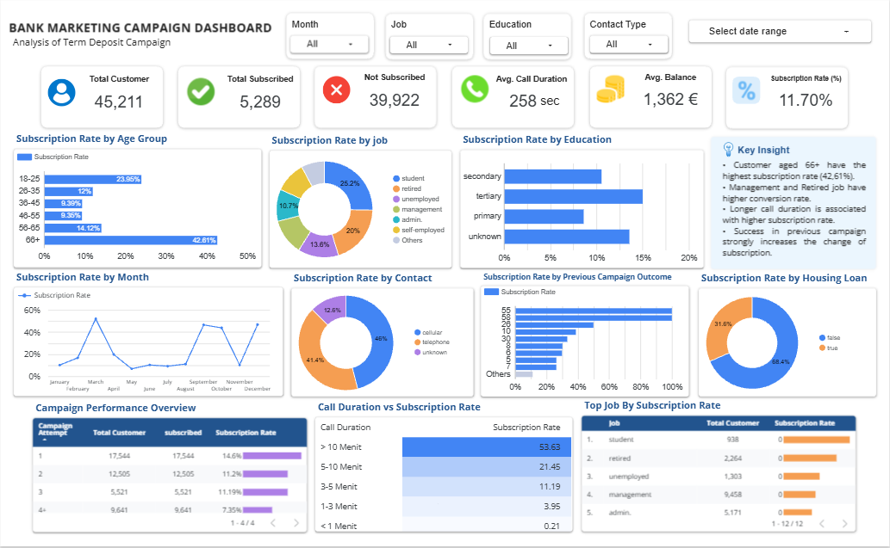

DATA ANALYTICS CASE STUDY
📊 Customer Analytics Dashboard
Dashboard analisis campaign term deposit untuk memantau customer, subscription rate, performa campaign, serta pola berdasarkan segmentasi customer dan aktivitas kontak.
01. The Goal
Mengubah data campaign menjadi dashboard yang lebih mudah dibaca sehingga metrik utama, segmentasi customer, dan performa campaign bisa dipantau dari satu tampilan.
02. Analysis Workflow
01 · Raw DatasetMemahami struktur data customer, campaign, contact, dan hasil subscription.
02 · Cleaning & TransformationMenyiapkan field turunan untuk segmentasi dan analisis, termasuk age group, month order, dan subscription flag.
03 · SQL / BigQueryMenggunakan query untuk agregasi KPI, segmentasi, dan validasi hasil analisis.
04 · Looker StudioMenyusun KPI, filter, chart, dan tabel agar hasil analisis lebih mudah dieksplorasi.
SELECT
month,
COUNT(*) AS total_contacts,
COUNTIF(subscribed_flag = 1) AS subscribed,
SAFE_DIVIDE(COUNTIF(subscribed_flag = 1), COUNT(*)) AS subscription_rate
FROM `projectbank-503013.Bank.Term_Deposit`
GROUP BY month
ORDER BY month_order;
03. Dashboard Preview

Screenshot dashboard asli dari project. Tampilan mencakup KPI utama, filter, segmentasi customer, tren subscription, campaign performance, dan call duration.
04. Dashboard Highlights
45,211 Total CustomerTotal customer yang tampil pada dashboard.
5,289 SubscribedJumlah customer yang tercatat melakukan subscription.
11.70% Subscription RateKPI ringkas untuk melihat proporsi customer yang melakukan subscription.
66+ Age GroupSegmen usia 66+ terlihat memiliki subscription rate tertinggi pada visual age group.
Call DurationDashboard membandingkan subscription rate berdasarkan durasi panggilan.
Campaign PerformancePerforma campaign dibandingkan berdasarkan attempt, customer, subscription, dan rate.
05. What This Project Shows
Project ini menunjukkan workflow end-to-end dari data mentah sampai dashboard: cleaning dan transformasi, query SQL/BigQuery, validasi KPI, lalu visualisasi interaktif untuk membantu membaca pola customer dan performa campaign.